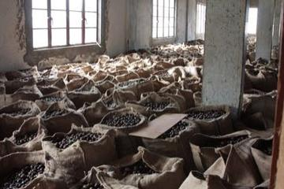
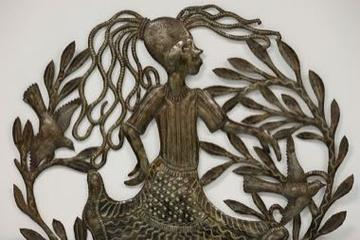

Deep Past and First Games 11
Adji-boto
Suriname · Board and table gamesHopscotch
Haiti +5 · Dexterity and skill gamesHoyito
Dominican Republic · Board and table gamesJacks, Dandy Shandy, ring games
Jamaica · Dexterity and skill gamesKay mancala
Haiti · Board and table gamesMarbles
Cuba +5 · Dexterity and skill gamesRope skipping, tops, marbles
Haiti · Dexterity and skill gamesStreet
Saint Vincent and the Grenadines +1 · Dexterity and skill gamesStreet games
Bahamas · Dexterity and skill gamesWa-wee
Saint Lucia · Board and table gamesWarri
Bahamas +3 · Board and table games
River Valleys and First Cities 2
Classical Worlds 3

Kalinda Stick Duel
Trinidad and Tobago · Wrestling and martial sports
Tuk Band
Barbados · Other traditionsKites
Barbados +1 · Dexterity and skill games
Crossroads and Golden Ages 8
Bahamian dominoes
Bahamas · Board and table gamesCheckers
Bahamas +1 · Board and table gamesCuban dominoes
Cuba · Board and table gamesDominoes
Dominican Republic +5 · Board and table gamesHaitian dominoes
Haiti · Board and table gamesJamaican dominoes
Jamaica · Board and table gamesSlam dominoes
Barbados · Board and table gamesUnion Jack Game
Antigua and Barbuda · Board and table games
Age of Contact and Craft 5

Antigua Classic Yacht Race
Antigua and Barbuda +1 · Racing
Steelpan
Trinidad and Tobago · Musical instrumentsStreet baseball
Dominican Republic · Street and playground gamesTaco bat game
Cuba · Street and playground gamesYard cricket
Trinidad and Tobago +5 · Street and playground games
Modern Heritage 13

Grenada Nutmeg Grading
Grenada · Puzzles and mind games
Jamaican Sound System Selector
Jamaica · Musical instruments
Limbo
Trinidad and Tobago · Dexterity and skill games
Stickball
Cuba · Bat-and-ball gamesBurn-out
Cuba · Street and playground gamesCush
Guyana · Dexterity and skill gamesDraughts
Barbados +5 · Board and table gamesFour Corners
Cuba · Street and playground gamesHandkerchief game
Dominican Republic · Street and playground gamesHeritage games
Saint Lucia · Street and playground gamesRounders
Guyana · Street and playground gamesSpinning top
Dominican Republic +5 · Dexterity and skill gamesStreet play games
Trinidad and Tobago · Dexterity and skill games
Living Traditions 6

Bahamian Straw Plaiting
Bahamas · Crafts and making
Bequia Boat and Model Builder
Saint Vincent and the Grenadines · Crafts and making
Haitian Oil-Drum Metal Cut-Out Art
Haiti · Crafts and making
Mento band
Jamaica · Musical instruments
Tap-Tap Bus Painting
Haiti · Crafts and making
Tres cubano
Cuba · Musical instruments